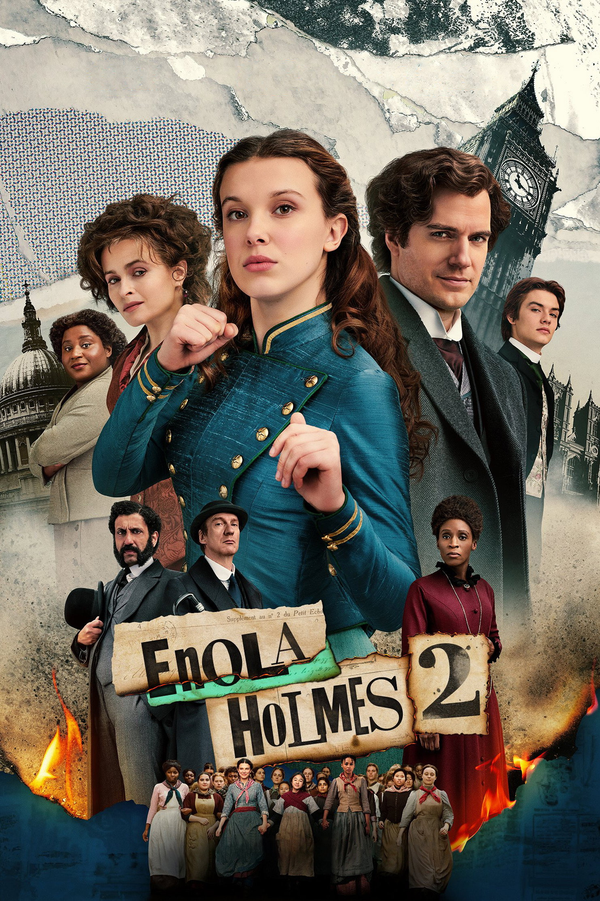
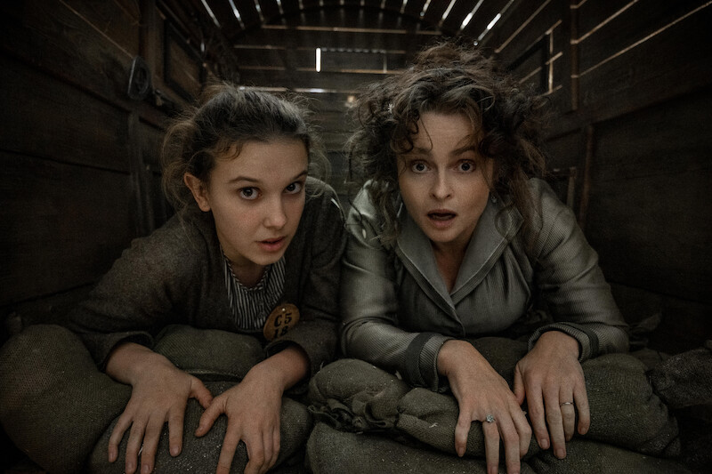
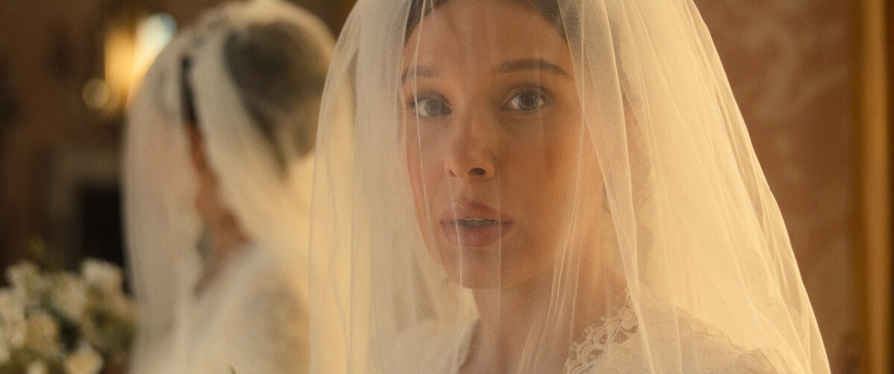

FILM 01 · 2020
Enola Holmes
从母亲的突然离开开始，Enola踏上寻找之旅。她寻找的不只是一个人，也是在混乱与不安中重新理解母亲、理解自己。
我们熟悉Sherlock Holmes，却未必认识他的妹妹Enola。比起再讲一遍她如何破案，这次我更想聊聊她和母亲Eudoria：一个女孩如何带着母亲留下的东西长大，又如何在爱与不解之间，慢慢成为自己。
从母亲的突然离开开始，Enola踏上寻找之旅。她寻找的不只是一个人，也是在混乱与不安中重新理解母亲、理解自己。

Enola开始经营自己的侦探事业，案件把她带向失踪女孩与工厂女工。女性的故事从家庭延伸到劳动、阶层与彼此扶持。

Enola在个人事业、亲密关系与未来计划之间继续摸索。故事提出的问题不是女性该选哪一种人生，而是她能否真实地参与自己的选择。
图片说明：本期仅使用《福尔摩斯小姐》系列的电影海报及影片官方剧照，不使用无关人物照片、原创插画或其他电影图片。素材版权归 Netflix 及相应权利人所有。


Enola Holmes有很多让人喜欢的东西：聪明、轻快的推理，打破规矩的女孩，维多利亚时代的服装与街道，还有Enola每次面对困境时那种“我偏要自己看看”的劲头。但三部电影里，最让我想停下来多看一会儿的，是她与母亲Eudoria之间那条不总是平顺、却始终牵引着彼此的线。
故事开始时，Enola发现母亲不见了。哥哥们很快替她安排好接下来的人生：去寄宿学校，学礼仪，学会成为一位合乎期待的淑女。可Enola想做的不是乖乖等候。她想找到母亲，也想弄清楚为什么母亲离开时没有把一切告诉她。她的出走既是冒险，也是一个女儿面对突然失去时，带着害怕、愤怒和思念做出的回应。
我喜欢这个起点，因为它让Enola不是一张写着“独立女性”的海报。她聪明，却也会不安；她想自己做主，却仍然在意母亲是否在乎她。她可以对母亲生气，同时又急切地寻找母亲。这些感受并不互相抵消，反而让她像一个真实的年轻人。
Eudoria教Enola观察、思考、运动，也没有把“成为淑女”当作女儿唯一的未来。她给予女儿的，不只是一套生存技巧，更是一种看待世界的方式：规则并不因为存在得久，就一定正确；好奇不是坏毛病；女孩不必把自己缩小，才能让周围的人感到安心。
这些早年的日常，在母亲离开后才显出重量。Enola身边没有人愿意认真听她说话，哥哥们也更关心如何把她放进合适的轨道。她只能把母亲教过的东西拿出来用，一边追踪线索，一边学着判断什么值得相信。母亲不在身边，却早已参与了她面对世界的方式。
但电影并没有因此把Eudoria写成毫无缺点的完美母亲。她有自己的信念，也有自己的计划；她相信女儿能够找到答案，却没有真正免除女儿寻找过程里的担忧和委屈。她的离开有她的理由，女儿感到被留下也同样真实。爱并不会自动消除误解，理想也不一定能照顾好身边每一个人的情绪。
Eudoria最吸引我的地方，是她没有只作为“Enola的妈妈”存在。她有自己的目标、判断和公共生活。她参与女性争取权利的行动，并不是为了给女儿的人生增加一层漂亮的意义；她自己也不愿意接受一个把女性关在礼仪、家庭和沉默里的世界。
这让母女之间的传承更有意思。母亲传给女儿的，不只是照顾自己、保护自己的方法，也包括一种对世界的判断：为什么有些人可以自由行动，有些人却总被要求听话？为什么所谓体面，常常意味着女性不能表达真实的愿望？当女儿学会提出这些问题，她便不再只是母亲的作品，而是开始用自己的眼睛看世界。
可传承并不等于复制。Enola不需要变成Eudoria的翻版。她可以从母亲那里得到勇气，也可以对母亲的选择感到不满；可以理解母亲为何离开，也仍然希望母亲当初能给她更多解释。母亲是一个有自己人生的女人，女儿也是。她们之间最值得珍惜的，并不是永远意见一致，而是两个人都应该拥有成为自己的空间。
现实里的母女关系也常常如此。长大以后，我们也许才慢慢看见母亲曾经面对的限制、她没有说出口的愿望，以及她在当时条件下做出的选择。理解她的处境，不意味着必须抹掉自己曾经受过的伤；承认她的局限，也不意味着她给过的爱和力量就失去了价值。一个人可以同时拥有感激、愤怒、亲近和距离。
女性成长故事很容易被讲成一条笔直的路：女孩挣脱家庭，拒绝所有安排，最后成为无所不能的人。但真实的成长往往没这么整齐。Enola并不是从此不再需要任何人，也不是只要足够聪明，就能轻松跨过所有障碍。她会犯错，会害怕，也会在意别人如何看待自己；她只是逐渐学会，不把人生的决定权完全交给别人。
她与母亲的距离，也不仅仅是从家里走到世界各地。更深的一层，是她从“母亲希望我成为谁”走向“我自己想成为谁”。她可以珍惜母亲给她的东西，却不必沿着母亲的每一步前进；可以爱母亲，却不必把自己的判断交出去。独立不是拒绝亲密，而是在关系里仍然有自己。
我觉得这也是这段母女关系能打动人的地方。电影没有让母女之间的分歧变成一个简单的对错题。Eudoria有她的理想，Enola有她想要的解释；她们都在努力，却未必总能用对方需要的方式表达。母亲不是女儿的全部答案，女儿也不是母亲理想的延长线。她们都要继续生活，继续选择。
到了第二部，Enola开始尝试独立经营侦探事业。她以为只要自己有本事、肯努力，就能让人认真对待她；现实却不总按她的想法运转。案件把她带向工厂女工和失踪女孩，也让她看见，有些人的困境很容易被体面社会忽略。
这一部分让我喜欢的，不只是Enola又一次证明自己有多聪明，而是她开始认真看待那些原本不在权力中心的女性。一个女孩的失踪值得调查，一个女工的处境值得被听见。Enola的能力在这里不再只是个人成就，也成了她理解别人、与别人并肩行动的工具。
当然，电影是一部轻快的商业冒险作品，它把一些现实中的阻力处理得比较利落，无法完整呈现女性争取权利时面对的结构性困难。但它仍然把镜头从一个特别聪明的主角，移向了更多女性的生活。女性之间的联结并不要求她们来自相同的阶层、拥有相同的性格；有时候，开始认真听另一个人的故事，就已经改变了我们看待世界的方式。
当一个女孩从小就努力挣脱别人替她安排的未来，她长大后真正需要的，未必是再接受一套新的标准。女性可以想要爱情，也可以不想结婚；可以把事业放在前面，也可以在某个阶段把照顾关系看得很重要。选择的意义，不在于它看起来够不够勇敢、够不够独立，而在于她是否真正参与了决定，是否还能保有自己的声音、边界与退路。
这也让母亲与女儿的故事有了回响。Eudoria选择她的道路，Enola正在寻找自己的道路。女儿可以继承母亲的勇气，却不必继承她的每一种选择；母亲也不必成为女儿未来的模板。也许好的传承不是“照我这样活”，而是“你可以认真想想，自己想怎样活”。
因为它们有悬疑、有笑点，也有让人愿意继续看下去的轻快节奏；而在故事里面，我看到一个母亲努力做自己，一个女儿努力理解她，也努力从她身边走出去。她们没有始终站在同一边，也没有靠一次谈话就把所有问题说清楚。她们之间的爱并不完美，却没有因为分歧而失去意义。
我也喜欢电影把女性成长放进不同的关系里来讲。母亲和女儿、女孩和女工、女性与她所处的社会，都不是孤立的故事。一个女孩能否自由地成长，既与她的勇气有关，也与身边的人是否愿意支持她有关；既与她的个人选择有关，也与社会给女性留下多少空间有关。
看完之后，我想问的不是“你是不是一个足够独立的女人”，而是：你和母亲之间，有没有一些直到长大才慢慢理解的事？你有没有从她那里得到力量，也有没有需要自己重新选择的部分？我们可以先不急着给出标准答案，只把这些感受认真放在这里。
— 草莓味口气 · 她的影单第一期